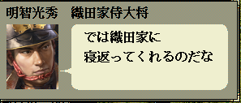

int カスタム::On_カスタム条件(string 条件名, カスタム条件パラメタ型 パラメタ) {
if ( 条件名 == "AS条件::メイン::内応結果可否" ) {
}
// 変更しない場合-1
return -1;
}
値：0 大成功。相手武将はその場で即座に出奔。(大名や軍団長が出奔すると情報が狂うので注意)
値：1 内応の取り付けに成功
値：2 失敗した。相手に否定された。
値：3 逆に内応されてしまい、出奔していった。(大名や軍団長が出奔すると情報が狂うので注意)
値：4 失敗した。逆に主に不満はないのか？ と言われた。

int カスタム::On_カスタム条件(string 条件名, カスタム条件パラメタ型 パラメタ) {
if (条件名 == "AS条件::メイン::内応結果可否") {
デバッグ出力 << 条件名 << endl;
int 主体武将 = パラメタ.整数1 - 1;
int 客体武将 = パラメタ.整数2 - 1;
int 予定結果 = パラメタ.整数3;
if (rand() % 2) { // 1/2の確率で結果が操作される。
// 技能弁舌をもっているならば… 相手を即座に出奔させてしまう。
if (p武将情報[主体武将].技能弁舌) {
// 客体武将が大名や軍団長ではないことを確認して…
if (p武将戸籍情報[客体武将].身分 >= 身分::宿老 && // 宿老～足軽
p武将戸籍情報[客体武将].状態 == 状態::現役) { // 立場が「現役」である。
return 0; // 結果値0(=大成功。仕掛けられた相手武将は即座に出奔してくれた)という結果に差し替えたい場合、
// あるいは結果値1(成功。内応を取り付けた)という結果に差し替えたい場合、
// 客体武将(仕掛けられる側)が大名や軍団長であってはならない。
// 大名や軍団長が即座に相手側に出奔する、あるいは内応されるといった仕様には天翔記の挙動として対応していない。
}
}
// 義理が0ならば…逆に自分が即座に出奔してしまう。
if (p武将情報[主体武将].義理 == 0) {
// 主体武将が大名や軍団長ではないことを確認して…
if (p武将戸籍情報[主体武将].身分 >= 身分::宿老 && // 宿老～足軽
p武将戸籍情報[主体武将].状態 == 状態::現役) { // 立場が「現役」である。
return 3; // 結果値3(=内応は大失敗。なんと仕掛けた本人が逆に出奔してしまった)という結果に差し替えたい場合、
// 主体武将(仕掛ける側)が大名や軍団長であってはならない。
// 大名や軍団長が即座に相手側に出奔する、といった仕様には天翔記の挙動として対応していない。
}
}
}
}
// 変更しない場合-1
return -1;
}